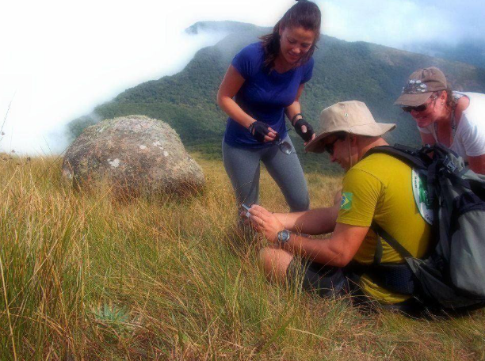
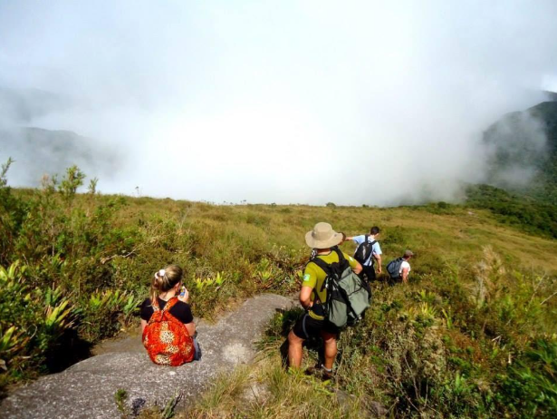

Detalhes do Roteiro
É uma das montanhas mais bonitas da Serra do Mar paranaense. Seu cume é amplo e todo formado por vegetação campestre. De seu topo há uma belíssima vista para o Pico Paraná, a maior montanha do Sul do Brasil. Destaques: Vistas para o Pico Itapiroca, Pico Paraná, Anhangava, Marumbi, Represa do Capivari, Baía de Antonina, Morretes e, em dias claros, até mesmo a Ilha do Mel.
Tarifas
| Nº de pessoas | Guia bilíngue | Adulto | Criança |
|---|---|---|---|
| 2 a 4 | Sim | R$ 550,00 | R$ 500,00 |
| 5 a 10 | Sim | R$ 350,00 | R$ 299,00 |
Galeria de Fotos

